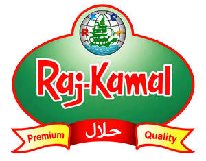

Trade Mark Journal No.2026/010 6 March 2026
UK00004322056 11 January 2026 (30)

- Class 30
- Puffed rice; Rice; Puffed corn snacks; Cooked rice; Fried rice; Glutinous rice; Brown rice; Steamed rice; Husked rice; Rice tapioca; Rice dumplings; Glutinous rice flour; Rice vermicelli; Rice porridge; Rice biscuits; Flour of rice; Rice flour; Rice flour porridge; Rice cakes; Cakes (Rice -); Rice noodles; Rice crisps; Puffed cheese balls [corn snacks]; Rice pudding; Flour for making dumplings of glutinous rice; Rice crackers; Rice puddings; Rice crusts; Rice pasta; Injeolmi [glutinous rice cakes coated with powdered beans]; Stir-fried rice; Creamed rice; Cheese flavored puffed corn snacks; Wholemeal rice; Roasted brown rice tea; Enriched rice [uncooked]; Onigiri [rice balls]; Onigiri (rice balls); Candied cakes of popped rice; Chocolate-coated rice cakes; Pounded rice cakes (mochi); Rice starch flour; Dried sugared cakes of rice flour (rakugan); Cakes of sugar-bounded millet or popped rice (okoshi); Artificial rice [uncooked]; Glutinous pounded rice cake coated with bean powder (injeolmi); Enriched rice; Rice snacks; Sticky rice cakes (Chapsalttock); Rice crackers [senbei]; Senbei [rice crackers]; Senbei (rice crackers); Sweet pounded rice cakes (mochi-gashi); Sauces for rice; Rice chips; Half-moon-shaped rice cake [songpyeon]; Pellet-shaped rice crackers (arare); Rice sticks; Edible rice paper; Natural rice flakes; Rice cake snacks; Prepared rice; Rice mixes; Breakfast cereals made of rice; Snack food products made from rice flour; Corn flour; Flour of corn; Instant rice; Corn starch flour; Prepared rice dishes; Flour of barley; Corn flour [for food]. All of the aforesaid goods being halal; or all of the aforesaid goods containing ingredients which are halal-compliant and prepared in accordance with halal requirements.
ARK INTERNATIONAL (GB) LTD.